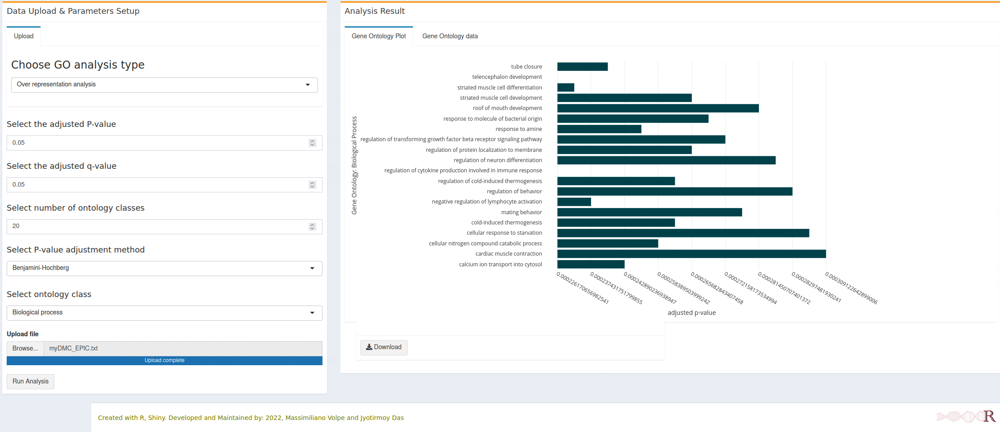
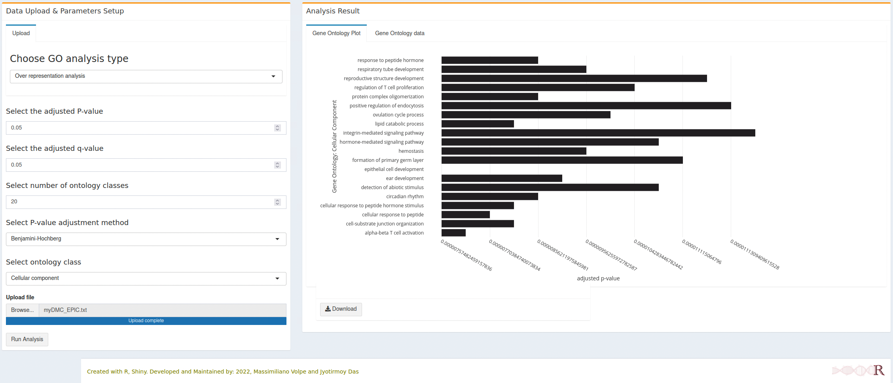
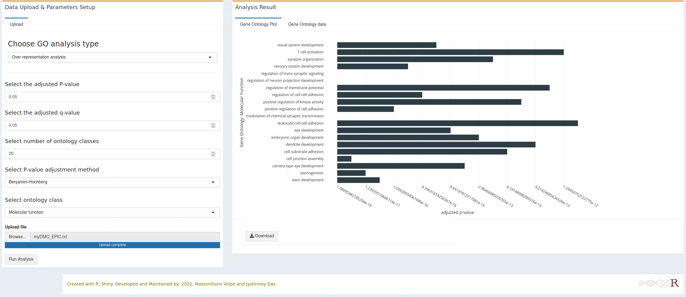
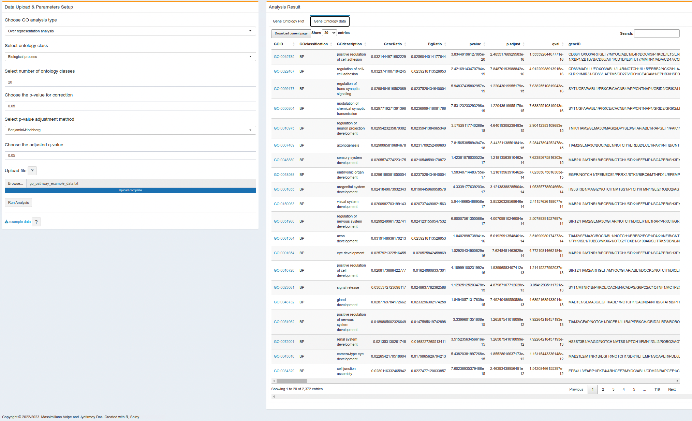

8 Gene Ontology (GO) enrichment analysis
Gene Ontology is a very well-known method for accessing the functions of the gene identified through methylation analysis or expression analysis. Here in methylR, we used ontology analysis using the clusterProfiler package (latest version) (Yu et al. 2012; Wu et al. 2021).
8.1 How to use
8.1.1 Data upload & Parameters setup
8.1.1.1 Parameters setup
- Choose GO analysis type: user can choose to do the analysis whether over-representation analysis or the gene-set enrichment analysis (GSEA) from the dropå-down menu.
- Select the adjusted p-value: user can also choose the adjusted p-value for the analysis. Default is set to 0.05.
- Select the adjusted q-value: q-value or the FDR can also be adjusted as per user’s requirement. Default is 0.05.
- Select number of ontology classes: to see the number of ontologies on the graph, user can setup different number. Default is 20.
- Select P-value adjustment method As per clusterProfiler, we set different p-value adjustment methods, Benjamini-Hochberg, Benjamini-Yeketuli, Bonferroni, Holm, Hommel, Hochberg, FDR or none. Default is Benjamini-Hochberg.
- Select ontology class: As defined in GO classification, we included all three ontology classes which user can select to show the plot.
8.1.1.2 Data upload
At present, user can upload the DMC data produced by the main analysis (methylysis section ) directly. The input file should be in a text (tab-delimited) format.
8.2 Analysis result
- On the right tab, the analysis result the plot will be generated as soon as computation finished. The plot is generated with plotly and it will be dynamic in nature as before. User can download the plot as PNG format, zoom in/out or do other stuffs as per plotly figures. The dynamic figure can also be downloaded as a html file.
Note
- All horizontal bars (Gene Ontology terms) are clickable and will open a new tab with the respective gene onlogy detail from the AmiGO database.
- Each interactive figure can be downloaded as HTML file and PNG file. The HTML file is clickable and each gene ontology term can open the respective detail from AmiGO database.
8.2.1 Biological processes

8.2.2 Cellular component

8.2.3 Molecular function

- On the second right tab, user will get the result as a table format. It might takes some time to compute result and generates the table. User can download the result as an Excel file from the current page or the entire result.

Warning
- In the gene onlogy enrichment table, the GO ID is clickable and will open the respective GO class from the AmiGO database. However, this feature is only avaible on the browser, if the user download the table, there is no such link to check the GO source.
- The GO enrichment table will download the full result (i.e., all GO classes, Cellular Component, Molecular Function and Biological Processes), user donot need to run the table again for different GO classes.
8.3 R packages used
TO ALL OUR USERS, IF YOU ARE EXPERIENCING ANY TROUBLE WITH THE APP, BEFORE SENDING THE BUG REPORT, PLEASE RESTART THE DOCKER CONTAINER AND TRY AGAIN.↩︎